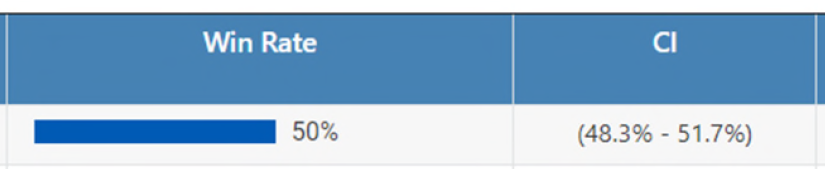
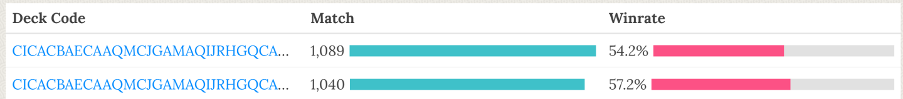

A little guide to understanding and use/read them and why TLC is in the mix?!
Hi, Legna here, normally I try to write those analysis articles in a publication-style format, not meant to be read by everyone; this post on the other hand is meant to be an easier read and accessible to most players.
I would like to say that this is the first of a series of articles meant to explain some statistical concepts applied in Legends of Runeterra (LoR) or any other cards game, but, I can hardly guarantee it.
Most likely the cadence will be slow. This article alone took weeks to write, not only because I get little time to work on this, but also because of deciding what to writ and how to communicate it.
Player A: “This deck is way better than yours. You see, it even reached a 55% win-rate at Master this week!”
Player B: “You fool! You clearly didn’t see the latest values as mine is obviously the superior version with a 55.5% win-rate at Master this week!”
Voice in the background: “Little did they know both decks win-rates were actually the same”
For those who use my content one may notice that I use something called Confidence Interval (CI)

or similarly those who use Storm deck tracker can see he adds a \(\pm X\) value to a deck win-rate.
These \(\pm X\) values are again a CI.
Here, we aim to explain what confidence interval are, how they are computed and why you should almost always require their use.
In order to increase the accessibility of the reading the article is divided in section of increasing difficulty:
The first section explains the confidence intervals and what they mean. If you want to make it quick this should be enough.
The mid section explain how to use a CI and why you should want them. We believe that any ‘pro-player’ should know the concept from this section.
The third and last section will add some theory about the CI explaining some of the numbers behind them.
A confidence interval is made of two values called lower limit and upper limit usually written inside squared or round brackets like
\([lower,upper]\)
in addition, it’s associated to a probability called confidence level.
If the confidence level is not written, it assumed to be 95%
Example: A deck with a 52% mean WR and a 95% confidence interval between 51% and 54% is written
52%; 95% CI [51%,54%]
When we refer to the true-value 1, for example the win-rate of a deck, we refer to the unknown/actual win-rate that is associated to the deck. It is the value we try to estimate when we divide \(\frac{\#wins}{\#games}\).
The caveat is that the value we obtain from \(\frac{\#wins}{\#games}\) is an estimation, we don’t know how far we are from the actual win-rate (sort-of).
Unless we truly know the generating process of the phenomenon we are interested in, we never know the true value of what we are searching for.
For an easier example let’s say we flip a coin 10 times. The probability of head and tails is the same 50% and we will expect a number of head and tails equal to \(0.5\times10 = 5\).
Even so, we know it wouldn’t be surprising to ends up with 6 heads / 4 tails obtaining an estimation for head of 60% and tail at 40%. It’s wrong and in this case we know it’s wrong because we know the underlying probability of getting head/tail.
With most events we don’t have this luxury, we don’t know if the decks’ win-rate we can see on various sites is correct or biased because of reasons. We can model the win-rates, we can be pretty sure about our estimations but they always remain estimations.
Unless we truly know the generating process of the phenomenon we are interested in, we never know the true value of what we are searching for.
Returning to our coin example, increasing the number of coin-flips would make the estimation more stable, converging after an infinite numbers of times at the correct/true value of 50%.
Of course we don’t really need infinite coin-flips or statistics would be useless
A Confidence Interval gives us information about the variability of our results. The smaller the interval is, the better is our estimation. By increasing the amount of data the interval gets smaller and smaller. While not the correct interpration it could be said that we can expect with a certain level of confidence (usually 95%) that the value of interest, like the win-rate lies between the lower and upper limit.
Question: If the (95%) confidence interval or Azir/Irelia ranges from 52.5% and 57.5%. What does this tell us?
Answer: If this confidence interval is one of the 95% that contains the true win-rate then the true win-rate of Azir/Irelia lies between 52.5% and 57.5%.
While our intuition may tells us how to read a CI, it’s also really, really easy to misunderstand them; so, as counter-intuitive as it may be, we need to start with what is not a confidence interval:
A Confidence Interval (CI) is not the probability that the true value of our estimate in inside a certain interval. For such case the true value is either contained or not and so the probability is either 1 (it’s inside) or 0 (it’s outside)
Let’s say we have a deck with a 55.0% WR and a 95% CI of [52.5%,57.5%]. A CI doesn’t mean that there is 95% probability that the true win-rate lies between 52.5% and 57.5%. If the true win-rate is 54%, then the value is inside the interval and so the probability of being inside it is 100%. If the true value was 58% then the probability of the true value being inside the CI is 0%.
Important: While the definition we provided is wrong, for those who are not working with data it’s sort of an ok definition to remember, or well, we take those.
Even worse definition: The CI corresponding to a deck’s win-rate do not represent the interval obtained from the win-rate of the worst and best players. The definition is absolutely independent from specific players and/or their skills.
What a CI is, is an extension of a single point estimation (a single value). By associating a level of confidence, a CI provides a degree of precision of of our estimate, like the win-rates.
The bigger the range of the CI the less accurate is our estimation.
As a simplification: assume we were to take 100 sites that collect Legends of Runeterra (LoR) data from the API, but because there is an issue with the data collection, each site can only collect a small number of games for each deck.
If we compute the 95% confidence interval from each site we can expect that 95 of the 100 sites have an interval that does contain the true win-rate.
For a visual explanation of the concept please refer to the example at the start of the third section (Fig.??).
This section will go a bit more in-depth into the use of CI while still refraining to use many formulae.
We shall take a little detour to expand the relationship between the data at our disposal and the confidence level.
As we briefly mentioned in the previous section, we want the CI to be as small as possible, while still being relevant.
Assuming we are dealing with the same kind of data, like using always the same deck, there are two values that can influence the range of a CI:
the probability by which we want our CI to contain the population value, our win-rates. at fixed number of data (n), the higher the confidence level the bigger the confidence interval
confidence level (\(\uparrow\)) \(\rightarrow\) range of confidence interval (\(\uparrow\))
As we want that most of our CI may be the ones that do contain the true value, we want to have the confidence level to be high enough that we don’t have to worry too much about it.
The most common values of confidence level used are 90%, 95% and 99%, with 95% being the most common of the three.
What follows is a table showing the wideness of the CI at a fixed amount of data (Tab:1). Let us also remember, the smaller the CI is (expressed as wideness in the table) the better is our estimation.
| CI Variation at different values of conf.level and fixed n | ||||||
|---|---|---|---|---|---|---|
| x | n | mean | lower | upper | wideness | Conf. Level |
| 550 | 1000 | 55.0% | 53.9% | 56.1% | 0.021 | 50.0% |
| 550 | 1000 | 55.0% | 53.2% | 56.8% | 0.036 | 75.0% |
| 550 | 1000 | 55.0% | 52.4% | 57.6% | 0.052 | 90.0% |
| 550 | 1000 | 55.0% | 51.9% | 58.1% | 0.062 | 95.0% |
| 550 | 1000 | 55.0% | 50.9% | 59.1% | 0.081 | 99.0% |
Table 1: Fixed n table
The more confident we want to be regarding our results the wider is the range of the CI, ranging in this case from a min of around 2% (0.021) with 50% confidence to a max of 8% (0.081) range with a 99% confidence.
The amount of data at our disposal, for example the number of games of certain deck for which we wants to estimate the win-rate. at fixed confidence level, the higher n, the smaller the confidence interval
n (\(\uparrow\)) \(\rightarrow\) range of confidence interval (\(\downarrow\))
It is suggested to have \(n \ge 30\) and \(n \times \hat{p} \ge 5\) with \(\hat{p} = \frac{\#wins}{\#games}\)
Now that the relationships are defined, we want to show the effect of our choices on the results.
Similarly the previous table, here is an example with fixed confidence level an varying n:
| CI Variation at different values of n and fixed conf.level | ||||||
|---|---|---|---|---|---|---|
| x | n | mean | lower | upper | wideness | Conf. Level |
| 55 | 100 | 55.0% | 45.2% | 64.8% | 0.195 | 95.0% |
| 275 | 500 | 55.0% | 50.6% | 59.4% | 0.087 | 95.0% |
| 550 | 1000 | 55.0% | 51.9% | 58.1% | 0.062 | 95.0% |
| 5500 | 10000 | 55.0% | 54.0% | 56.0% | 0.020 | 95.0% |
| 55000 | 100000 | 55.0% | 54.7% | 55.3% | 0.006 | 95.0% |
Table 2: Fixed Conf.Level table
Compared to the results in Tab:1, in Tab:2 at fixed conf.level, the number of data/games is even more effective in influencing the CI range and the more data we have the better. Yet, it’s also possible to notice that we have to increase ten fold the amount of data at our disposal to reduce the CI range to around 1/3rd of its previous value. 2
Finally we introduce what is most likely the easiest and most important use of CI: hypothesis testing.
Thanks to the CI it is really easy to answer the question:
And the similar question:
Now, let us use the example from the introduction.
We have two decks, one with a win-rate of 55.5% and one with a win-rate of 55%. How can we say with confidence that their true WRs do indeed differ?
Figure 1: example-wIntersection
We simply look at their CI and check if the intervals do overlap or not. If they overlap, like in this case, their difference is not statistically significant.
In Fig:1 the line overlap \(\rightarrow\) we don’t reject the equality of win-rates \(\rightarrow\) there is support for the equality of win-rates.
It’s very important to be careful how to interpret a statistical hypothesis. One NEVER PROVES something, but it can reject an hypothesis, giving at most support to the opposite but never proving it. Think of SCP-55, all that is known is that it is not round, but what shape it could have is still an infinite amount of alternative options
Figure 2: example-woIntersection
We proceed in the same way for the example illustrated in Fig:2
The line don’t overlap \(\rightarrow\) we reject the equality of win-rates \(\rightarrow\) there is support for the inequality of win-rates.
So everything seems pretty easy: lines overlap = no difference, no overlap = different enough…
… well, sort of, unless you are working on a very important model you don’t want to be as strict and try to consider each case
Figure 3: example-fringe
In Fig:3 the two lines overlap but personally we thinks it would reject the equality of win-rates. It happens for a very small section and maybe the sample size is not even that big for deckA. 3
With this we don’t want to say that sometimes there are no rules about what to conclude, just that sometimes, it’s important to be flexible, everything is not black and white and to truly understand the data one must learn to navigate in the infinite sea of greys.
Does this mean that we conclude that one must decide subjectively each time? No! Once we set some rules we should try to follow them as much as we can but we should always consider what is the implication of the choices we make.
To better explain what we means, we conclude this section with an example taken from a discussion with Leer:

We have two versions of Aphelios Viktor whose decklist differ from a single card and nothing else, the first one has Vi, the second one has Starshaping.
Based on their WR, the two decks do seem to differ quite a lot, but let’s look at the CI
Figure 4: example-leer
By looking at Fig:4 The two deck doesn’t seems to differ as much anymore.
One may say: “But the WR difference is even even 3 percentage points!”
This is true, but let’s look at the data in another way:
| deck-w/Vi | deck-w/Starshaping | |
|---|---|---|
| #wins | 595 | 590 |
| #games | 1040 | 1089 |
The difference is of 5 additional wins with 50 less games which is not that far-fetched in over 1000 games. Again (Fig.??) perfectly shows how much the simple effect of chance can be enought to explain those results.
In addition, even assuming the chance wasn’t the true factor there could be so much more as a potential explanation. Assume that the Vi version is played usually by more skilled players, that alone could easily explain the difference, before even adding potential factors like luck of match-ups and similar point let us ask the following question:
All this is to say: be careful not to see differences everywhere just because some decks differ by a couple of percentage points. Sometimes it could just be that are focusing too much on small differences/details that nothing seems the equal. At the same time, as mentioned before don’t focus too much on the defined rules either, and be aware of possible differences that are not yet clearly defined just by a lack of data.
Of course this is only our educated guess, the impact of a single copy(ies) of cards is something we prefer to refrain from doing and leave it to figures like Dr.Lor
While the comparison of decks’ CIs against each other can help us discern significant differences, this is hardly what we would normally suggest doing with them.
We explained how the CI can help us answer whether or not our deck can support a certain hypothesis. But instead of asking if it’s at a certain win-rate or if it differs enough from another deck there is another very basic question that someone would want to know: is my deck actually good? Or to put it differently: does my deck have a positive win-rate?
Figure 5: example-4
The rules examples in Fig:5 doesn’t differ from what we previously told and so:
deckB confidence interval is all above the 50% win-rate \(\rightarrow\) we support the hypothesis that the win-rate is indeed positive
deckA confidence interval includes the 50% win-rate \(\rightarrow\) we can’t determine if the win-rate is positive or negative.
If we are only interested in knowing if a deck has positive/negative win-rate or note, as the key point is having the CI including the 50% value or not there are two consequences to remember:
Looking back at Tab:2, around 500 games should suffice for a deck with 55% win-rate. But that number decreases as the win-rate increases requiring just 100 games if the win-rate was 60%
| mean | lower | upper |
|---|---|---|
| 60.0% | 50.4% | 69.6% |
This result was to be expected, after-all; assume the true win-rate lies exactly at 50%. Then; not even an infinite amount of games should be able to provide us a definitive answer.
Confidence intervals are a really easy instrument for comparison of the win-rate (statistics) we are using. To hyper-simplify: compare the interval from the CI with what we are interested in, if there is no overlap there is a statistically significant difference, when overlapping the difference is not significant.
In the next section we will expand on some of the concepts explained up until now and some more but with one crucial difference: math will now start to appear, the countdown was completed with no Promising Future(?).
In this section we are going to expand on the concepts we only briefly mentioned before and expand on the theory behind the CI explaining some of the results.
In the discursive section we mentioned that
If we compute the 95% confidence interval from each site we can expect that 95 of the 100 sites have an interval that do contain the true win-rate.
What does this actually means? Let’s visually recreate the example visually.
Assume we have 100 players who are all equally skilled, all playing the same deck that we know has a 55% true win-rate. Each player plays 200 games.
Now, for each player we compute the CI and plot each interval vertically, the result can be seen in Fig.??.
Figure 6: simulation of 100 samples of their own CI
Each bar is a CI from a player that either contains (blue) the true win-rate (55%) or does not contain it (red).
Of the 100 players we notice that we have six intervals that don’t include 55% and so there are 94 that do contain the 55% win-rate. This is a result by chance but if we repeated this process for an infinite amount of players we would expect a ratio of 5:95.
As the black dot represent the win-rate for each player we notice that can differ a lot from the expected value. Not only that, sometimes it’s so low that even as a deck with a true WR of 55%, it would pass a hypothesis test for being a deck with a true WR of below than 50%. This is only due to the effect of pure chance, no accounting for skill or MU or anything else.
This is a prime example of why personal results shouldn’t be relied on too much and it’s usually better to just use aggregated results. Using personal results could also bring additional issues but that could be an entire article by itself. For now and with this example, we hope it’s clearer when we mention “assume the CI is one that contains the true value” and about how chance can really make an impact.
In the mid-section we showed in Tab:1 and Tab:2 an example of the effect on the CI range with different values of sample size (number of games) and confidence level. To better explain the effect we must show the math behind them, let us start with a general definition of CI:
\(P( L \leq \theta \leq U)= 1-\alpha\)
where L and U are the lower and upper limits of our interval.
Note:usually the confidence level is defined as 1 minus the error we want to have, so with an error of 5% we have a confidence level of 1 - 0.05 = 95%.
The equation above can also be written as:
\(CI = [\hat{F}^{-1}_{(1-\alpha)/2},\hat{F}^{-1}_{(1+\alpha)/2}]\)
by using the quantile of the statistics we are using.
These equations are hardly clear and for those who didn’t do some basic statistics they should not even seems familiar.
Isn’t there a simple expression to define how to compute the CI of a win-rate?
This is where we use the reality-warping power of the Central Limit Theorem 4, which, given very easy conditions, obliterates any distribution we needs and replaces it with a very easy Normal distribution.
Because of that the problem turns into:
\(P( -z_{\alpha/2} \leq \frac{p-\mu}{\sigma\sqrt{n}} \leq z_{\alpha/2}) = 1-\alpha\)
Where \(z_\alpha\) are the quantiles of the level of a Normal distribution.
The previous expression can be further rewritten to obtain the interval defined by
\(\mu \pm z_{\alpha/2} \frac{\sigma}{\sqrt(n)}\)
and as we are dealing with a proportion \(\hat\mu = p = \frac{\#wins}{\#games}\) and \(\hat\sigma = \hat{p}(1-\hat{p})\) we obtain:
\(p \pm z_{1-\alpha/2} \sqrt{\frac{p(1-p)}{n}}\)
After regurgitating all those expressions we are left with a very simple one, which is even simpler if we consider for a confidence level of 95% we have \(z_{\alpha/2} = 1.96 \sim 2\)
\(p \pm 2 \sqrt{\frac{{p(1-p)}}{n}}\)
While normally we could stop here we complete this section with a little ‘hack’. If we want a very quick computation of the CI and if our win-rate is between 30% and 70%, so pretty much all realistic cases, then \(\sqrt{p(1-p)}\) doesn’t differ too much from when \(p=50\%\) and \(\sqrt{p(1-p)} = 1/2\) making it so that we could very appropriately obtain
\(p \pm \frac{1}{\sqrt{n}}\)
Again, this is a very rough approximation which shouldn’t be normally used but it can help to obtain a basic idea about how big our CI should be.
Now the relationship we defined as how a CI’s range change at varying the value of confidence level and sample size (n or number of games) should be clearer.
For reference here are some values of confidence level and the associated \(z_{\alpha/2}\)
| Conf. Level | Z |
|---|---|
| 50.00% | 0.674 |
| 95.00% | 1.96 |
| 99.00% | 2.58 |
| 99.99% | 3.89 |
The confidence level while impactful is not usually the one that matter when creating a confidence level. Even more considering it’s usually fixed at 95% so with associated an value of 1.96.
The number of games is what usually can contribute the most to the CI’s range but as the expression shows, it’s not by the linear increase of the number of games but instead by the square root of the number of games. That is why at some point the range doesn’t decrease by much even after adding so many games.
In Fig.?? we present a graphical representation of the CI’s range at a fixed confidence level of 95% varying the number of games and for different win-rates. In Fig.?? we restrict the number of games to a smaller, more common range.
Figure 7: CI range variation - plot a
Figure 8: CI range variation - plot b
With the ‘hack-approximation’ we described above the relationship between the CI’s range and the square root of the number of games should be even easier now.
And so we conclude this explanation of confidence intervals. We hope we were able to dissipate the mystery about how they work and also explaine why they are so important.
We hope that other “lor-stats-creators” will one day start using them too. The tool is very very easy to use and should be fairly easy to grasp. Some nuances might not be not as easy to implement but the very basics should help the most competitive players to better evaluate decks and do better choices.
Let \(X_1,X_2,...,X_N\) be a set of N independent random variates and each \(X_i\) have an arbitrary probability distribution and \(Y = X_1 + X2 + ...+ X_n\) be the sum of the n i.i.d. random variables \(X_i\).
Let \(E(Y) = \mu_Y\) and \(Var(Y) = \sigma^2_Y\)
The Central Limit Theorem says
\(Y \approx N(\mu_y,\sigma^2_Y)\)
If the \(X_i\) are i.i.d. with mean Let \(\mu_X\) and variance \(\sigma^2_X\), then \(\mu_Y = n\mu_X\) and \(\sigma^2_Y = n\sigma^2_X\)
For the sample mean \(\bar{X_n}\), the CLT says
\(\bar{X_n} = \frac{1}n(X_1+X_2+...+X_n) \approx N(\mu_y,\sigma^2_Y)\)
This theorem states that when samples are large (above about 30) the sampling distribution will take the shape of a normal distribution regardless of the shape of the population from which the sample was drawn. For small samples the t-distribution better approximates the shape of the sampling distribution.
We also know from this theorem the standard deviation of the sampling distribution (i.e., th standard error of the sample mean) will be equal to the standard deviation of the sample (s) divided by the square root of the sample size (N). The central in the name refers to the theorem being important and far-reaching and has nothing to do with centres of distribution. 5
Question: Someone may ask:
Answer: The answer lies in the definition of the Binomial Distribution. The Bimonial distribution is after all, no more than a sum of Bernulli distribution with same probability parameter of the event but being repeated n amount of times. What we obtain as the win rate estimation of \(\frac{\#wins}{\#games}\) turns out to the sampling mean of n Bernulli. This is also the reason why the results of a Binomial distribution are said to approximate to a Normal distribution after around 30 repetitions \(\rightarrow\) we are using the CLT.
Thanks to Leer for helping edit some spelling/grammar errors.
also referred as the population value↩︎
careful that this relationship depends on the win-rate and confidence level, so it’s not a golden-rule, more on this in the next session↩︎
deckA has 250 games, while deckB has 1000 games↩︎
or Teorema Limite Centrale, TLC in italian↩︎
Andy Field - An Adventure in Statistics the reality enigma. Second Edition↩︎